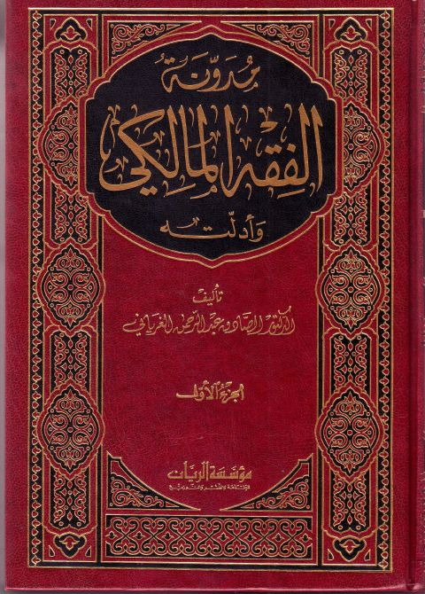

Downloads need an internet connection.
مدونة الفقه المالكي وأدلته
Authors: الصادق بن عبد الرحمن الغرياني
Publishers: مؤسسة الريان
**▫️ العنوان: مدونة الفقه المالكي وأدلته** ▪️ المؤلف: #الصادق_عبد_الرحمن_الغرياني ▫️ الناشر: #مؤسسة_الريان_للطباعة_والنشر ▪️ تاريخ النشر: 1423هـ 2002 م ▫️ بلد النشر: بيروت، #لبنان ▪️ الطبعة: 1 ▫️ عدد الأجزاء: 5 ▪️ الصفحات: 3061 ▫️ نوع الوعاء: #كتاب ▪️ التصنيف الرئيسي: #الفقه_وأصوله ▫️ التصنيف الفرعي: #فقه_مالكي ۪